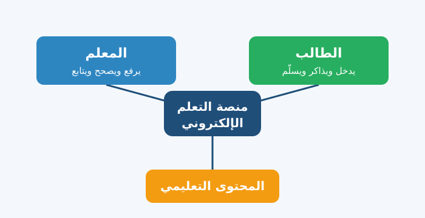
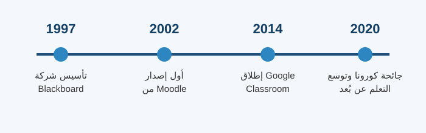

اسم الطالبة: آيه عبد الحميد حسن دياب
الرقم الجامعي: 2504525
الفرقة الثانية — معهد الدلتا العالي لنظم المعلومات الإدارية والمحاسبية بالمنصورة
مقرر: تطبيقات الإنترنت والمنصات الإلكترونية — تحت إشراف الدكتورة / مها زغلول
العام الدراسي 2026 / 2027
التعلم الإلكتروني (E-Learning) هو استخدام الإنترنت والأجهزة الرقمية، مثل الكمبيوتر والموبايل، في تقديم المحتوى التعليمي والتواصل بين الطالب والمعلم، بدلاً من الاعتماد فقط على الحضور داخل القاعة. وتُعدّ منصة التعلم الإلكتروني هي المكان الذي يجمع كل هذه العناصر معاً: المحاضرات والواجبات والاختبارات والدرجات والنقاش، في موقع أو تطبيق واحد يدخل عليه الطالب بحسابه الخاص.
وتكمن أهمية هذه المنصات في أنها تتيح التعلم في أي وقت ومن أي مكان، وتقلّل الاعتماد على الورق، وتساعد المعلم على متابعة مستوى طلابه. وقد ظهرت أهميتها بوضوح خلال جائحة كورونا، إذ ذكرت اليونسكو أنه في ذروة الأزمة تأثر نحو 1.6 مليار متعلّم في أكثر من 190 دولة بإغلاق المؤسسات التعليمية، فاعتمد كثير منهم على المنصات الإلكترونية لمواصلة الدراسة [3].
تُعرف المنصة التعليمية أيضاً باسم نظام إدارة التعلم (LMS – Learning Management System)، وهي برنامج يعمل عبر الإنترنت يُستخدم في إنشاء المقررات وتنظيمها وتقديمها للطلاب ومتابعة تقدمهم [5]. ودورها الأساسي هو ربط الطالب بالمعلم وبالمحتوى كما يوضح الشكل التالي.

شكل (1): دور المنصة في الربط بين الطالب والمعلم والمحتوى التعليمي
Moodle: منصة مفتوحة المصدر (Open Source) أنشأها مارتن دوجياماس، وصدر أول إصدار منها عام 2002. يمكن للجامعات تثبيتها على خوادمها الخاصة وتخصيصها وإضافة ملحقات (Plugins) إليها، وتوفر أدوات للدورات والاختبارات والواجبات والمنتديات وسجل الدرجات [1][2].
Google Classroom: خدمة من Google أُطلقت عام 2014 ضمن أدوات Google for Education، وتتميز ببساطة الاستخدام وارتباطها بخدمات مثل Google Drive وGoogle Docs وGoogle Meet، حيث ينشئ المعلم صفاً ويشارك الطلاب الواجبات والإعلانات بسهولة [4].
| وجه المقارنة | Moodle | Google Classroom |
|---|---|---|
| نوع المنصة | مفتوحة المصدر | خدمة سحابية من Google |
| الاستضافة | تُثبَّت على خوادم المؤسسة أو عند مزوّد استضافة | تعمل على سحابة Google |
| سهولة البدء | تحتاج إعداداً وإدارة فنية | سهلة جداً للمبتدئين |
| التخصيص | مرونة كبيرة بالإضافات | خيارات أقل |
| الاستخدام الشائع | الجامعات والمعاهد | المدارس والفصول الصغيرة |
ويلخص الشكل التالي أبرز محطات تطور منصات التعلم الإلكتروني [5]:

شكل (2): خط زمني لأبرز محطات تطور منصات التعلم الإلكتروني
| المميزات | التحديات |
|---|---|
| التعلم في أي وقت ومن أي مكان | الحاجة إلى إنترنت جيد وجهاز مناسب |
| حفظ المحاضرات والرجوع إليها | ضعف التفاعل المباشر إذا غاب النقاش |
| تصحيح سريع ومتابعة أسهل للدرجات | الحاجة إلى تدريب الطلاب والمعلمين |
| توفير الورق والوقت والتكلفة | صعوبة ضمان النزاهة في الاختبارات عن بُعد |
منصات التعلم الإلكتروني أصبحت جزءاً أساسياً من التعليم الجامعي الحديث، فهي تنظّم المقررات وتسهّل التواصل وتتيح للطالب التعلم بمرونة. ومع ذلك فنجاحها لا يعتمد على التقنية وحدها، بل على جودة المحتوى، وتدريب المستخدمين، وتوفر الإنترنت والأجهزة المناسبة.